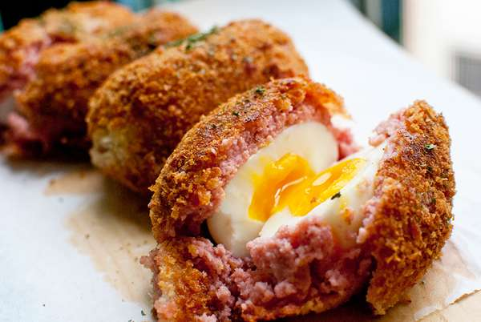

Scotch Egg

for 2 people
Tool
Pot, Frying pan, Mixer
time
30m
Kcal
575.3kcal
Ingredients
3 Eggs
400 g Sausage
A little salt
A little pepper
2 tablespoons flour
2 tablespoons dry bread crumbs
1 quart oil for deep frying
Recipe
Place eggs in a saucepan and cover with cold water. Bring water to a boil and stay 4 minutes for soft boiled egg /6-8minutes for hard boiled egg. Then put in to a cold water or water with viniger to pill it off easily.
In a medium bowl, mix together the blended pork sausage, salt and pepper.
Mold each part around one of the hard-cooked eggs, rolling between your hands to shape.
Dip the balls into the egg, then roll in the bread crumbs until coated.
Heat the oil in a large saucepan or deep fryer to 365 degrees F (180 degrees C), or until a cube of bread dropped into the oil turns brown in 1 minute. Lower the eggs carefully into the hot oil. Fry for 5 minutes, or until deep golden brown.
